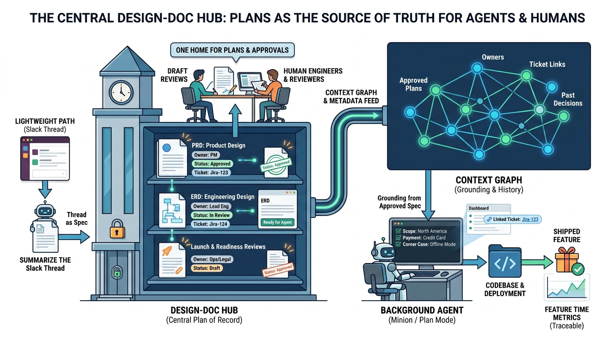

Part III — LIFECYCLE: The Feature Path, Rewired
Plans Before Prompts: PRDs, ERDs and the Design-Doc Hub

Image generated by Google Gemini (gemini-3-pro-image-preview)
Part III — LIFECYCLE: The Feature Path, Rewired

Image generated by Google Gemini (gemini-3-pro-image-preview)